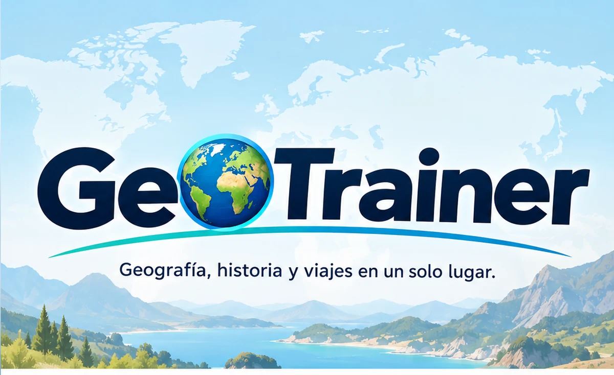

GeoTrainer

País → Moneda
Elige la zona geográfica y el tipo de partida.
¿Cuál es la moneda de…?
¡Buen ritmo!
Llevas 15 preguntas. ¿Quieres seguir practicando?
Resultado
Montaña → País
Elige cómo quieres practicar.
¡Buen ritmo!
Llevas 15 preguntas. ¿Quieres seguir practicando?
Resultado
Adivina el mar u océano
Elige cómo quieres practicar.
¡Buen ritmo!
Llevas 15 preguntas. ¿Quieres seguir practicando?
Resultado
Mapa mundial de geografía física
Localiza elementos físicos sobre un mapa mundial.
Elige el tipo de ejercicio:
Ríos del mundo
Elige cómo quieres practicar.
Pregunta
¡Buen ritmo!
Llevas 15 preguntas. ¿Quieres seguir practicando?
Resultado
Mapa de ríos
Practica con 16 de los principales ríos europeos sobre un mapa interactivo.
Localiza…
Toca directamente el trazado del río.
Elige continente
Elige continente y practica países o capitales directamente sobre el mapa.
Europa
Elige cómo quieres practicar.
Localiza…
Toca directamente sobre el mapa.
¡Buen ritmo!
Llevas 15 preguntas. ¿Quieres seguir practicando?
Resultado
Mapa de España
Práctica espacial de provincias, comunidades autónomas, ríos y relieve.
Capitales de provincia
¿Cómo quieres practicar?
Configurar partida
Pregunta
🗺️ ¿Dónde está?
El país preguntado está señalado en rojo.
¡Buen ritmo!
Llevas 15 preguntas. ¿Quieres seguir practicando?
🏁 Examen terminado
Criterios y fuentes
Cómo se organizan y revisan los contenidos de GeoTrainer.
1. Estados incluidos
La base principal de GeoTrainer utiliza 195 Estados: los 193 miembros de Naciones Unidas y los dos Estados observadores, Santa Sede y Estado de Palestina. Algunos territorios o entidades con estatus particular pueden aparecer en contenidos específicos, pero no se contabilizan dentro de esos 195.
2. Continentes y países transcontinentales
Para que los ejercicios sean consistentes se aplica un criterio didáctico único. En la clasificación actual, Rusia se trabaja en Europa, Turquía en Asia y Chipre en Europa. En geografía existen otros criterios válidos para determinados Estados transcontinentales; esta clasificación sirve únicamente para mantener estable el banco de preguntas.
3. Capitales con casos especiales
Cuando un Estado presenta varias capitales, sedes institucionales o situaciones particulares, GeoTrainer usa una respuesta de referencia y añade una aclaración educativa. Entre otros casos, se distinguen la capital constitucional de Bolivia, la capital administrativa de Sudáfrica, la capital administrativa de Sri Lanka y la ausencia de capital oficial de Nauru.
4. Cartografía y geografía física
Los mapas mundiales y continentales se basan en cartografía de Natural Earth. Los trazados fluviales y algunos puntos de relieve o mares son representaciones didácticas simplificadas: sirven para aprender localización general y no para medición, navegación o delimitación jurídica.
5. Revisión de contenidos
Los datos se revisan periódicamente y se contrastan, cuando procede, con fuentes institucionales, cartográficas y geográficas de referencia. Los cambios de capital, denominación o estatus pueden requerir actualizaciones posteriores.
Última revisión general: octubre de 2026.
Aviso legal
Información sobre GeoTrainer, su uso y sus contenidos.
1. Identificación y finalidad
GeoTrainer es un proyecto personal, educativo y no comercial creado por Didac G. S. para facilitar el aprendizaje y la práctica de geografía, historia y contenidos relacionados con viajes.
En esta versión no se publica una dirección de contacto. Si el proyecto incorpora en el futuro servicios, registro de usuarios, publicidad, contratación u otras funciones que hagan necesaria información adicional, este aviso se actualizará.
2. Propiedad intelectual
Salvo que se indique expresamente lo contrario, el código original, estructura de la aplicación, diseño, selección y organización de contenidos, textos propios, preguntas, explicaciones y demás elementos originales de GeoTrainer están protegidos por la normativa de propiedad intelectual.
No se autoriza la reproducción, distribución, comunicación pública, transformación, extracción sistemática, reutilización comercial o publicación de una copia sustancial de esos elementos sin autorización expresa de su titular.
Esta reserva no alcanza a hechos y datos de conocimiento general —por ejemplo, capitales, nombres de países, localización de ríos o datos geográficos— ni a materiales de terceros o de dominio público, que se rigen por sus propias condiciones. Los datos cartográficos de Natural Earth utilizados en los mapas son de dominio público.
3. Repositorio público
La publicación del código en un repositorio accesible públicamente no implica por sí sola la concesión de una licencia general de reutilización. Los usos técnicos permitidos por la plataforma de alojamiento se rigen por sus propias condiciones. Fuera de esos permisos, no se concede una licencia adicional salvo autorización expresa.
4. Uso de la aplicación
GeoTrainer tiene una finalidad exclusivamente educativa. Aunque se procura mantener la información revisada, pueden existir errores, omisiones o contenidos que necesiten actualización. El usuario debe contrastar la información cuando resulte relevante para fines académicos, profesionales o de otro tipo.
5. Legislación de referencia
Este aviso se ha redactado teniendo en cuenta, entre otras normas, el Real Decreto Legislativo 1/1996, de 12 de abril, por el que se aprueba el texto refundido de la Ley de Propiedad Intelectual, y la Ley 34/2002, de 11 de julio, de servicios de la sociedad de la información y de comercio electrónico, en la medida en que resulten aplicables.
Última actualización: 18 de octubre de 2026.
Política de privacidad
Cómo trata GeoTrainer la información de sus usuarios.
1. Datos solicitados por GeoTrainer
En su configuración actual, GeoTrainer no dispone de cuentas de usuario, formularios de registro ni formularios de contacto y no solicita directamente nombre, correo electrónico, teléfono u otros datos personales al utilizar los ejercicios.
2. Progreso educativo opcional
GeoTrainer permite activar de forma voluntaria «Mi expedición». Si el usuario la activa, los PX, niveles, resultados, dominio, logros y conceptos pendientes de repaso se guardan mediante localStorage exclusivamente en el navegador y dispositivo utilizado. Esta información no se envía a servidores de GeoTrainer, no se utiliza para analítica ni publicidad y puede borrarse o exportarse desde la propia aplicación.
3. Alojamiento y datos técnicos
GeoTrainer se publica mediante infraestructura de terceros. El proveedor de alojamiento puede tratar datos técnicos necesarios para prestar y proteger el servicio —por ejemplo, dirección IP, fecha y hora, información del navegador o registros de seguridad— de acuerdo con sus propias condiciones y políticas.
4. Analítica y publicidad
Actualmente GeoTrainer no incorpora herramientas propias de analítica, publicidad comportamental ni perfilado de usuarios. Si en el futuro se añaden estas funciones, esta política se actualizará antes de su uso y se aplicarán las medidas de información y consentimiento que correspondan.
5. Normativa
La política se ha redactado teniendo en cuenta el Reglamento (UE) 2016/679 (RGPD) y la Ley Orgánica 3/2018, de 5 de diciembre, de Protección de Datos Personales y garantía de los derechos digitales, en la medida en que resulten aplicables.
6. Contacto y ejercicio de derechos
GeoTrainer no publica actualmente un canal de contacto específico porque no solicita datos personales directamente. Si se habilita un sistema de contacto o tratamiento de datos personales, esta sección se actualizará con la información necesaria para el ejercicio de los derechos correspondientes.
Última actualización: 11 de octubre de 2026.